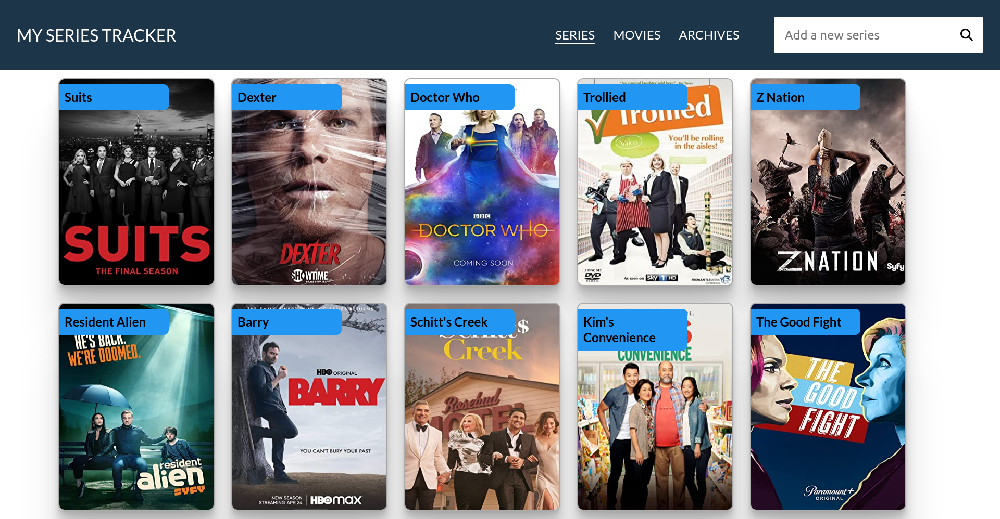
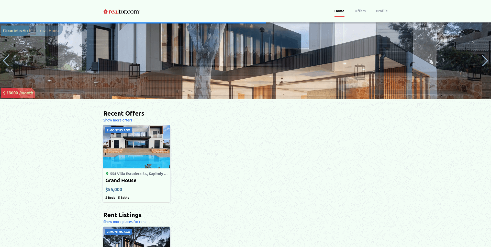

Projects
TV Series Tracker
A simple web project that helps tracks the TV series that we are currently watching. It uses OMDB API to fetch results
and saves the series on your local storage.

Realtor
A clone of the website realtor.com. It was created using React in partner with tailwindCSS. It uses google
authentication for authentication and the back-end was built using firebase.
